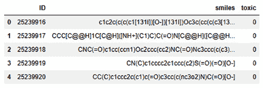
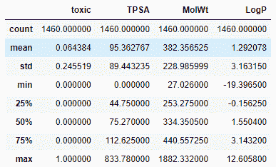
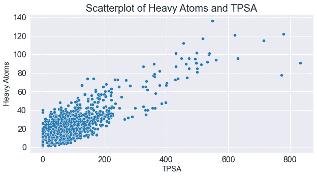
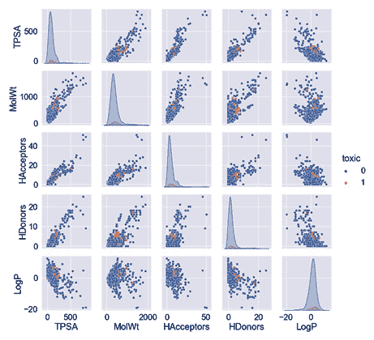
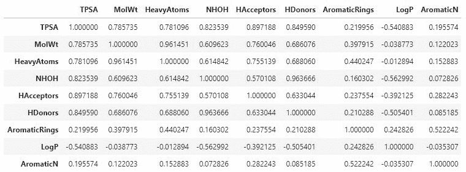
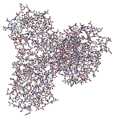
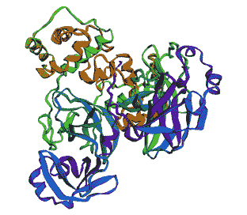

第4章:用Python可视化数据
不管你从事的工作领域，你选择的职业道路，或者你正在从事的具体项目，与他人有效沟通的能力总是有用的。事实上，整整一百年前，在1921年，弗雷德里克·r·巴纳德第一次说了一句话，这句话你可能已经听过无数次了:一幅画胜过千言万语。
随着近年来机器学习领域出现的许多新技术，结构化、处理和分析的数据量呈指数级增长。获取原始形式的数据并将其转换为有意义的交流图的能力是当今行业中最受欢迎的技能之一。大公司和企业做出的大多数决策通常都是数据驱动的，就你关心的领域展开对话的最佳方式是创建一个有意义的可视化。请考虑以下情况:
- 人脑处理可视化的速度比处理文本快6万倍。
- 人脑处理的所有信息中，近90%是通过视觉完成的。
- 可视化比简单的文本更容易被阅读30倍。
可视化并不总是推动对话或说服对方同意某事，它们通常被用作调查和探索数据的手段，以揭示隐藏的见解。在你承担的几乎每个机器学习项目中，都会有大量的努力投入到探索数据中，通过一个被称为探索性数据分析 ( EDA )的过程来揭示其隐藏的特征。EDA通常在任何类型的机器学习项目之前完成，以便更好地理解数据、其特征和限制。以这种方式探索数据的最佳方式之一是以可视化的形式，让您发现的不仅仅是数字值。
在下一章的课程中，我们将会看到一些有用的步骤来为一个给定的数据集开发一个健壮的可视化。我们还将探索今天在 Python 社区中使用的一些最常见的可视化库。最后，我们将探索几个数据集，并学习如何为它们开发一些最常见的可视化。
在本章中，我们将讨论以下主题:
- 探索数据可视化的六个步骤
- 常用的可视化库
- 教程-用Python可视化数据
技术要求
在本章中，我们将应用我们对Python和pip安装程序的理解，在 第2章 、介绍Python和命令行中演示。回想一下，安装库的过程是通过命令行完成的:
$ pip install library-name
那么，现在我们已经设置好了，让我们开始吧！
探索数据可视化的六个步骤
当开始有效地传达你的数据中的关键趋势时，呈现的方法总是很重要的。当向观众展示任何类型的数据时，有两个主要的考虑因素:首先，为论点选择正确的数据段；第二，为论点选择最有效的视觉化。在处理新的可视化时，有六个步骤可以帮助指导您:
- 获取:从数据源获取数据。
- 了解:了解数据，了解其类别和特征。
NaN值，以及损坏的条目。- 挖掘:识别模式或设计新功能。
- 浓缩:分离出最有用的特征。
- 代表:选择这些特征的代表。
让我们详细看看每一步。
第一步是从数据源获取您的数据。这个源可能是一个简单的CSV文件，一个关系数据库，或者甚至是一个NoSQL数据库。
第二，重要的是理解数据的上下文以及它的内容。作为一名数据科学家，你的目标是站在利益相关者的角度，尽你所能理解他们的数据。通常，与主题专家 ( SME )进行一次简单的对话可以节省你的时间，因为它强调了你原本不会知道的数据事实。
第三，过滤你的数据永远是至关重要的。数据科学的大多数现实应用很少涉及现成的数据集。通常，原始形式的数据将是主要的数据源，由数据科学家和开发人员来确保任何丢失的值和损坏的条目都得到处理。数据科学家通常将这一步称为预处理，而我们将在 第5章 、理解机器学习中对此进行更详细的探讨。
对数据进行预处理后，我们的下一个目标是挖掘数据，以尝试识别模式或设计新功能。在简单的数据集中，值通常可以快速显示为增加或减少，使我们能够轻松理解趋势。在多维数据集中，这些趋势通常更难发现。例如，时间序列图可能会向您显示一个增加的趋势，但是，该图的一阶导数可能会揭示与季节性相关的趋势。
一旦确定了感兴趣的趋势，代表该趋势的数据通常会从其他数据中分离出来。最后，这种趋势用一种视觉化的方式表现出来。
重要的是要理解这些步骤绝不是硬性规定，但它们应该被认为是帮助您生成有效可视化的有用指南。不是每一个可视化都需要每一个步骤！事实上，一些可视化可能需要其他步骤，也许有时以不同的顺序。我们将在本章的教程——用Python可视化数据一节中经历这些步骤来生成一些可视化。当我们这样做时，试着回忆这些步骤，看看你是否能识别它们。
在我们开始生成一些有趣的视觉效果之前，让我们先谈谈我们需要的一些库。
常用可视化库
Python中有数不清的可视化库可用，而且每天都有更多的在发布。可视化库可以分为和两个主类:静态可视化库和交互可视化库。静态可视化是由用户不能点击的绘制值组成的图像。另一方面，交互式可视化不仅仅是图像，而是可以被点击、改变形状、四处移动和在特定方向缩放的表示。静态可视化通常用于电子邮件通信、印刷出版物或幻灯片，因为它们是您不希望其他人更改的可视化。然而，交互式可视化通常是为仪表板和网站(如 AWS 或 Heroku )设计的，预期用户会与它们交互并在允许的情况下探索数据。
以下开源库是目前业界最流行的一些库。每种方法都有自己的优点和缺点，详见下表:

图4.1–Python中最常见的可视化库列表
现在我们已经了解了可视化库，让我们继续下一部分吧！
教程–用Python可视化数据
在本教程的课程中，我们将从一系列来源中检索一些不同的数据集，并通过各种可视化来探索它们。为了创建这些视觉效果，我们将结合一些开源可视化库来实现许多可视化步骤。我们开始吧！
获取数据
回想一下在 第3章 、SQL和关系数据库入门中，我们使用AWS创建了一个数据库并将其部署到云中，允许我们使用sqlalchemy查询数据:
- 让我们用直接从上一章生成的
endpoint、username和password值中查询数据集。继续用Python列出这些变量:ENDPOINT=" yourEndPointHere>" PORT="3306" USR="admin" DBNAME="toxicity_db_tutorial" PASSWORD = "<YourPasswordHere>"
- With the variables populated with your respective parameters, we can now query this data using
sqlalchemy. Since we are interested in the dataset as a whole, we can simply run aSELECT * FROM dataset_toxicity_sdcommand:from sqlalchemy import create_engine import pandas as pd db_connection_str = 'mysql+pymysql://{USR}:{PASSWORD}@{ENDPOINT}:{PORT}/{DBNAME}'.format(USR=USR, PASSWORD=PASSWORD, ENDPOINT=ENDPOINT, PORT=PORT, DBNAME=DBNAME) db_connection = create_engine(db_connection_str) df = pd.read_sql('SELECT * FROM dataset_toxicity_sd', con=db_connection)或者，您可以使用
read_csv()功能将相同的数据集作为CSV文件导入:df = pd.read_csv("../../datasets/dataset_toxicity_sd.csv") - We can take a quick look at the dataset to understand its content using the
head()function. Recall that we can choose to reduce the columns by specifying the names of the ones we are interested in by using double square brackets ([[]]):df[["ID", "smiles", "toxic"]].head()
这为我们提供了以下输出:
图4.2–毒性数据集中所选列的数据帧表示
如果您还记得，这个数据集中有很多列，从主键(
ID)到结构(smiles)和毒性(toxic)等一般数据。此外，还有许多描述和表示数据集的特征，从总极表面积(TPSA)一直到亲油性(LogP)。 - We can also get a sense of some of the general statistics behind this dataset – such as the maximum, minimum, and averages relating to each column – by using the
describe()function inpandas:df[["toxic", "TPSA", "MolWt", "LogP"]].describe()
这导致了下表:
图4.3–毒性数据集中选定列的一些一般统计数据
- Before we can explore the dataset further, we will need to ensure that there are no missing values. To do this, we can run a quick check using the
isna()function provided by thepandaslibrary. We can chain this with thesum()function to get a sum of all of the missing values for each column:df.isna().sum()
结果如图图4.4 所示:
图4.4-数据框中缺失值的列表
幸运的是，这个特定的数据集中没有丢失值，所以我们可以自由地继续创建一些图表和视觉效果。
重要说明
dropna()功能。另一个选项是使用fillna()或replace()功能用公共值替换任何缺失值。最后，您还可以使用mean()函数将缺失值替换为所有其他值的平均值。您选择的方法在很大程度上取决于列的标识和含义。
用条形图汇总数据
条形图或条形图是常用于描述分类数据，其中条形的长度或高度与其代表的类别值成比例。条形图提供了数据集集中趋势的直观估计，估计的不确定性由误差条表示。
那么，让我们创建我们的第一个条形图。我们将使用seaborn库来完成这个特殊的任务。有许多不同的方式来设计你的图表。出于本教程的目的，我们将使用来自seaborn的darkgrid样式。
让我们画出相对于FormalCharge特征的TPSA特征，以了解它们之间的关系:
import pandas as pd import seaborn as sns plt.figure(figsize=(10,5)) sns.barplot(x="FormalCharge", y="TPSA", data=df);
图4.5–TPSA和正式收费特征的柱状图
很快，我们可以看到两者之间有趣的关系，当FormalCharge的绝对值远离零时，TPSA特性趋于增加。如果你跟随提供的HDonors而不是TPSA:
sns.barplot(x="FormalCharge", y="HDonors", data=df)
我们可以在图4.6 中看到后续输出:

图4.6–h donor和形式电荷特性的条形图
看一下图表，我们看不出这两个变量之间的关系有多强。事实上，最高和最低的形式电荷显示出较高的氢供体。让我们将其与HAcceptors进行比较，后者是该数据集中的一个类似特征。我们既可以像对氢供体那样，单独绘制这一特征，也可以将两者结合成一张图。我们可以通过隔离感兴趣的特征来做到这一点(你还记得这个步骤的名字吗？)然后重塑数据集。Python中的数据帧通常使用四个常用函数进行整形:
图4.7–四种最常见的数据帧整形函数
这些函数中的每一个都以特定的方式重塑数据。pivot()函数通常用于对按索引组织的数据帧进行整形。stack()函数通常用于多索引数据帧——这允许你堆叠你的数据，使表格长而窄而不是宽而短。melt()函数类似于stack()函数，因为它也是堆叠你的数据，但是它们之间的区别在于stack()将把压缩的列插入到内部索引中，而melt()将创建一个名为Variable的新列。最后，unstack()与stack()正好相反，数据从长转换为宽。
为了比较氢供体和受体，我们将使用melt()函数，您可以在图4.8 中看到。请注意，在和流程中创建了两个新列:Variable和Value:
图4.8–melt()函数的图示
首先，我们创建一个名为df_iso的变量来表示隔离的数据帧，然后我们使用melt()函数来融化它的数据，并将其赋给一个名为df_melt的新变量。我们还可以打印出数据的形状，以向自己证明如果列的长度正好是的两倍，那么这些列会正确地堆叠。回想一下，您也可以使用head()功能检查数据:
df_iso = df[["FormalCharge", "HDonors", "HAcceptors"]] print(df_iso.shape) (1460, 3) df_melted = pd.melt(df_iso, id_vars=["FormalCharge"], value_vars=["HDonors", "HAcceptors"]) print(df_melted.shape) (2920, 3)
最后，数据排序正确后，我们可以继续绘制这些数据，将x轴指定为FormalCharge，y轴指定为value:
sns.barplot(data=df_melted, x='FormalCharge', y='value', hue='variable')
执行这行代码后，我们将得到下图:
图4.9–两个特征相对于正式电荷的条形图
当您开始探索seaborn库中的许多函数和类时，在编写代码时参考文档可以帮助您调试错误，还可以发现您可能不知道的新功能。你可以在https://seaborn.pydata.org/api.html查看Seaborn文档。
使用分布和直方图
40:
plt.figure(figsize=(10,5))
plt.title("Histogram of Molecular Weight (g/mol)", fontsize=20)
plt.xlabel("Molecular Weight (g/mol)", fontsize=15)
plt.ylabel("Frequency", fontsize=15)
df["MolWt"].hist(figsize=(10, 5),
bins=40,
xlabelsize=10,
ylabelsize=10,
color = "royalblue")
图4.10–仓尺寸为40的分子量直方图
随着您在Python中探索更多的可视化方法，您会注意到大多数库都提供了许多快捷函数，这些函数已经被开发和优化来执行特定的任务。我们可以对每个特征进行相同的数据整形过程，并对它们进行迭代，以绘制每个特征的直方图，或者我们可以简单地对它们一起使用hist()函数:
dftmp = df[["MolWt", "NHOH", "HAcceptors", "Heteroatoms", "LogP", "TPSA"]] dftmp.hist(figsize=(30, 10), bins=40, xlabelsize=10, ylabelsize=10, color = "royalblue")
图4.11–使用hist()函数自动生成的各种特征的一系列直方图
直方图也可以重叠，以便在同一个图上显示两个特征。当这样做的时候，我们需要通过使用alpha参数给这些图一定程度的透明度:
dftmp = df[["MolWt","TPSA"]]
x1 = dftmp.MolWt.values
x2 = dftmp.TPSA.values
kwargs = dict(histtype='stepfilled', alpha=0.3,
density=True, bins=100, ec="k")
plt.figure(figsize=(10,5))
plt.title("Histogram of Molecular Weight (g/mol)",
fontsize=20)
plt.xlabel("Molecular Weight (g/mol)", fontsize=15)
plt.ylabel("Frequency", fontsize=15)
plt.xlim([-100, 1000])
plt.ylim([0, 0.01])
plt.hist(x1, **kwargs)
plt.hist(x2, **kwargs)
plt.legend(dftmp.columns)
plt.show()
图4.12–两个不透明度降低的直方图的叠加
直方图是总结和可视化大量数据的极好方法，尤其是当功能像使用hist()功能一样简单时。你会发现大多数的库——比如pandas和numpy——都有许多类似功能的函数。
用散点图可视化特征
散点图是基于笛卡尔坐标的表示，允许在二维和三维空间中创建可视化。散点图由一个x轴和一个y轴组成，通常还带有一个附加特征，允许在数据中进行分离。散点图最适合与第三种特征一起使用，根据可用的数据类型，第三种特征可以用颜色或形状来表示。让我们看一个简单的例子:
- We'll take a look at an example of a simple scatter plot showing
TPSArelative to theHeavyAtomsfeature:plt.figure(figsize=(10,5)) plt.title("Scatterplot of Heavy Atoms and TPSA", fontsize=20) plt.ylabel("Heavy Atoms", fontsize=15) plt.xlabel("TPSA", fontsize=15) sns.scatterplot(x="TPSA", y="HeavyAtoms", data=df)前面代码的输出可以在图4.13 中看到:
图4.13–TPSA和HeavyAtoms特征的散点图
很快，我们注意到这两个特性之间有一些相关性，如轻微的正相关所示。
- We can take a look at a third feature, such as
MolWt, by changing the color and size using thehueandsizearguments, respectively. This gives us the ability to plot three or four features on the same graph, giving us an excellent interpretation of the dataset. We can see some trending amongTPSArelative toHeavyAtoms, and increasingMolWt:plt.figure(figsize=(10,5)) plt.title("Scatterplot of Heavy Atoms and TPSA", fontsize=20) plt.ylabel("Heavy Atoms", fontsize=15) plt.xlabel("Molecular Weight (g/mol)", fontsize=15) sns.scatterplot(x="TPSA",y="HeavyAtoms", size="MolWt", hue="MolWt", data=df)前面代码的输出如图图4.14 所示:

图4.14–两个特征的散点图，第三个特征用大小和颜色表示
- As an alternative to 2D scatter plots, we can use 3D scatter plots to introduce another feature in the form of a new dimension. We can take advantage of the
Plotlylibrary to implement some 3D functionality. To do this, we can define afigobject using thescatter_3dfunction, and subsequently, we define the source of our data and the axes of interest:import plotly.express as px fig = px.scatter_3d(df, x='TPSA', y='LogP', z='HeavyAtoms', color='toxic', opacity=0.7) fig.update_traces(marker=dict(size=4)) fig.show()
此代码的输出将导致图4.15 :

图4.15–三个特征的3D散点图，按毒性着色
- Instead of adding more features, we can add some more elements to the scatter plot to help interpret the two features on the x and y coordinates. We noticed earlier that there was a slight correlation within the dataset that seems ripe for exploration. It would be interesting to see if this correlation holds true for both toxic and non-toxic compounds. We can get a sense of the correlation using the
lmplot()function, which allows us to graphically represent the correlation as a linear regression within the scatter plot:sns.lmplot(x="HAcceptors", y="TPSA", hue="toxic", data=df, markers=["o", "x"], height = 5, aspect = 1.7, palette="muted"); plt.xlim([0, 16]) plt.ylim([0, 400])
后续输出如图图4.16 所示:
图4.16–两个特征及其相关关系的散点图
散点图是描绘数据关系并开始理解它们可能具有的任何依赖性或相关性的好方法。绘制回归曲线或最佳拟合线可以让你对任何可能的关系有所了解。我们将在下一节更详细地探讨这一点。
识别与热图的相关性
现在我们已经在数据集内建立了两个分子特征之间的关联，让我们研究一下是否还有其他的关联。我们可以轻松地浏览每组特征，绘制它们，并查看它们各自的回归曲线，以确定是否存在相关性。在Python中，建议尽可能自动化，幸运的是，这个任务已经自动化了！那么，让我们来看看:
- Using the
pairplot()function will take your dataset as input and return a figure of all the scatter plots for all of the features within your dataset. To fit the figure within the confines of this page, only the most interesting features were selected. However, I challenge you to run the code in the provided Jupyter notebook to see if there are any other interesting trends:featOfInterest = ["TPSA", "MolWt", "HAcceptors", "HDonors", "toxic", "LogP"] sns.pairplot(df[featOfInterest], hue = "toxic", markers="o")
图4.17–所选特征的毒性数据集的pairplot()图
- Alternatively, we can capture the Pearson correlation for each of the feature pairs using the
corr()function in conjunction with the DataFrame itself:df[["TPSA", "MolWt", "HeavyAtoms", "NHOH", "HAcceptors", "HDonors", "AromaticRings", "LogP", "AromaticN"]].corr()
图4.18-显示所选特征之间相关性的数据框架
- For a more visually appealing result, we can wrap our data within a
heatmap()function and apply a color map to show dark colors for strong correlations and light colors for weaker ones:sns.heatmap(df[["TPSA", "MolWt", "HeavyAtoms", "NHOH", "HAcceptors", "HDonors", "AromaticRings", "LogP", "AromaticN"]].corr(), annot = True, cmap="YlGnBu")
到目前为止，我们编写的一些代码已经变得有点复杂，因为我们开始将多个功能链接在一起。为了使语法和结构更加清晰，让我们仔细看看下面的函数。我们从调用
seaborn库中的主heatmap类开始(记得我们给它起了别名sns)。然后，我们添加数据集，其中包含感兴趣的要素的切片集。然后，我们应用相关函数来获得各自的相关性，最后添加一些额外的参数来给绘图添加样式和颜色:
图4.19–显示所选特征之间相关性的热图
无论您是在分析数据还是准备预测模型，识别数据集中的相关性总是有用的。你会发现corr()和它的很多衍生物都是机器学习领域常用的。
显示顺序和时间序列图
到目前为止，我们探索的数据集和特性都是以结构化和表格形式提供的，在数据帧中以行和列的形式存在。这些行彼此完全独立。并非所有数据集都是如此，而且依赖性(尤其是基于时间的依赖性)有时候也是我们需要考虑的一个因素。以为例，以Fast All(FASTA)序列为例——这是一种基于文本的格式，常用于生物信息学领域，通过字母代码来表示核苷酸或氨基酸序列。在分子生物学和遗传学中，一个称为鸟嘌呤-胞嘧啶 ( GC ) 含量的参数是一个度量，用于确定DNA或RNA分子中含氮碱基的百分比。让我们探索使用FASTA文件绘制新冠肺炎数据的顺序数据:
- 我们将通过使用
wget库:import wget url_covid = "https://ftp.expasy.org/databases/uniprot/pre_release/covid-19.fasta" filename = wget.download(url_covid, out="../../datasets")
导入数据集来开始这个过程 - 接下来，我们可以使用
Biopython(也称为Bio)库计算GC含量，这是计算分子生物学领域最常用的Python库之一。在http://biopython.org/DIST/docs/tutorial/Tutorial.html可以找到Biopython库的文档和教程。 - We will then parse the file using the
SeqIOandGCclasses and write the results to thegc_values_covidvariable:from Bio import SeqIO from Bio.SeqUtils import GC gc_values_covid = sorted(GC(rec.seq) for rec in SeqIO.parse("../../datasets/covid-19.fasta", "fasta"))请注意，根据文件保存的目录，前面代码中文件的路径可能会改变。
- Finally, we can go ahead and plot the results using either
pylabormatplotlib:import pylab plt.figure(figsize=(10,5)) plt.title("COVID-19 FASTA Sequence GC%", fontsize=20) plt.ylabel("GC Content %", fontsize=15) plt.xlabel("Genes", fontsize=15) pylab.plot(gc_values_covid) pylab.show()后续输出如图图4.20 所示:
图4.20-显示新冠肺炎序列GC含量的图
虽然有许多非基于时间的顺序数据集，如text、images和audio，但也有基于时间的数据集，如stock prices和manufacturing processes。在实验室空间内，有许多设备也利用基于时间序列的方法，例如那些与色谱相关的方法。对于示例，随着时间的推移，将time-series数据集和Temperature和Pressure叠加在一起:
dfts = pd.read_csv("../../datasets/dataset_pressure_ts.csv")
plt.title("Timeseries of an LCMS Chromatogram (Pressure &
Temperature)", fontsize=20)
plt.ylabel("Pressure (Bar)", fontsize=15)
plt.xlabel("Run Time (min)", fontsize=15)
ax1 = sns.lineplot(x="Run Time", y="Pressure",
data=dfts, color = "royalblue",
label = "Pressure (Bar)");
ax2 = sns.lineplot(x="Run Time", y="Temperature",
data=dfts, color = "orange",
label = "Pressure (Bar)");
该代码的输出可以在图4.21 中看到:
图4.21-显示LCMS失败运行的温度和压力的时间序列图
我们注意到在该图的前5分钟内，温度和压力参数上升相当快。在6.5分钟的范围内出现了某种程度的下降，系统持续增加了一会儿，然后两个参数开始直线下降，并在各自的范围内保持水平。这是一个仪器故障的例子，这是一个经过微调的机器学习模型相对于其成功的对应物能够检测到的情况。我们将在 第7章 、监督机器学习中更详细地探讨这种异常检测模型的开发。
用桑基图强调流程
数据科学中一种流行的可视化形式是桑基图——因米纳德对入侵俄罗斯期间拿破仑军队的经典描述而闻名。桑基图的主要目的是在流程图上以比例宽度的形式显示数值:
图4.22-查尔斯·约瑟夫·密纳德绘制的描绘拿破仑向俄罗斯进军的桑基图
桑基图通常用于描述不同领域的许多应用。桑基图在生物技术和卫生领域的应用包括:
- 临床试验期间候选药物的描述
- 合成分子的工艺流程图
- 微生物发酵工艺流程图
- 项目流程图和成功率
- 描述组织内成本的财务图表
让我们想象一个公司候选药物管道的简单例子。我们将得到候选分子的总数，它们的相分类，最后，它们的形态被指定为小分子或大分子。我们可以利用Plotly库来帮助我们:
import plotly.graph_objects as go fig = go.Figure(data=[go.Sankey(node = dict(pad = 50, thickness = 10, line = dict(color = "black", width = 0.5), label = ["Drug Candidates", "Phase 1", "Phase 2", "Phase 3", "Small Molecules", "Large Molecules"], color = "blue"), link = dict( source = [0, 0, 0, 1, 2, 3, 1, 2, 3], target = [1, 2, 3, 4, 4, 4, 5, 5, 5], value = [15, 4, 2, 13, 3, 1, 2, 1, 1] ))])
这段代码很长也很复杂——让我们试着把它分解一下。figure对象包含几个我们需要考虑的参数。第一个是pad，它描述了可视化的节点之间的间距。第二个描述了节点条的thickness值。第三个设置线的color和width值。第四个包含节点的label名称。最后，我们得到数据，它的结构与我们习惯的方式略有不同。在这种情况下，数据集被分为一个source数组(或原点】、target数组和与之关联的value数组。从左侧开始，我们看到source的第一个值是节点0，它转到节点1的target，带有一个15的value。以这种方式阅读流程可以让用户或开发人员对数据流更加清楚。最后，我们可以继续使用show()绘制图像:
fig.update_layout(title_text="Drug Candidates within a Company Pipeline", font_size=10) fig.show()
下图显示了上述代码的输出:
图4.23-代表公司管道的桑基图
桑基图是显示信息随时间或按类别流动或转移的好方法。在前面的例子中，我们从管道中的大小分子的角度看了它的应用。现在让我们来看看如何将这些分子可视化。
可视化小分子
当涉及到小分子时，我们可以使用各种软件平台和在线服务，通过多种方式将它们可视化。幸运的是，有一个很好的常用库，可以使用pip安装rdkit库:
import pandas as pd import rdkit from rdkit import Chem
我们可以解析我们在本教程前面导入的数据帧，并通过索引提取一个示例smiles字符串。然后我们可以使用rdkit的Chem类中的MolFromSmiles()函数创建一个分子对象，使用smiles字符串作为单个参数:
df = pd.read_csv("../../datasets/dataset_toxicity_sd.csv")
m = Chem.MolFromSmiles(df["smiles"][5])
m

图4.24-一个小分子的示意图
我们可以通过查看不同的指数值来检查另一个分子的结构:
m = Chem.MolFromSmiles(df["smiles"][20]) m
这一次，我们的输出如下:
图4.25-一个小分子的示意图
除了呈现打印就绪的小分子描述，rdkit库还支持与小分子特性的分析、预测和计算相关的各种功能。此外，该库还支持使用电荷计算以及相似性映射:
from rdkit.Chem import AllChem
from rdkit.Chem.Draw import SimilarityMaps
AllChem.ComputeGasteigerCharges(m)
contribs = [m.GetAtomWithIdx(i).GetDoubleProp('_GasteigerCharge') for i in range(m.GetNumAtoms())]
fig = SimilarityMaps.GetSimilarityMapFromWeights(m,
contribs, contourLines=10, )
图4.26-小分子电荷的示意图
既然我们已经了解了如何使用RDKit来表示小分子，让我们来看看它在大分子中的应用。
可视化大分子
有许多Python库被设计用来可视化、模拟和分析用于研究和开发的大分子。目前，最常见的库之一是py3Dmol。该库专门用于Jupyter笔记本环境中的3D可视化目的，允许创建可供出版的3D蛋白质视觉效果。使用pip框架可以很容易地下载这个库。
在撰写本文时，世界仍在应对源自中国武汉并蔓延至全球的新冠肺炎病毒。2020年7月8日，新型冠状病毒3CL 蛋白酶的1.7吋分辨率结构在pdb = 6XMK发布。让我们继续使用这种蛋白质作为例子，在下面的可视化:
- 我们可以使用
py3dmol库并直接在下面的函数import py3Dmol largeMol = py3Dmol.view(query='pdb:6xmk', width=600, height=600)
中查询蛋白质结构来开始这个可视化的开发 - With the library imported, a new variable object called
lmcan be specified using theviewclass inpy3Dmol. This function takes three main arguments. The first is the identity of the protein of interest, namely6xmk. The second and third arguments are the width and height of the display window, respectively. For more information about PDB files, visit thestickargument:largeMol.setStyle({'stick':{'color':'spectrum'}}) largeMol执行这一行代码后，我们得到了分子的如下图像:
图4.27-一个大分子或蛋白质的球棍图
- Notice that we added a
stickargument that displayed the last structure. We can change this argument tocartoonto see a cartoon representation of this protein based on its secondary structure:largeMol.setStyle({'cartoon':{'color':'spectrum'}}) largeMol当执行这一行代码时，我们得到了分子的如下图像:
图4.28-大分子或蛋白质二级结构的示意图
- There are a number of other changes and arguments that can be added to custom fit this visualization to a user's particular aims. One of these changes is the addition of a Van der Waals surface, which allows for the illustration of the area through which a molecular interaction might occur. We will add this surface to only one of the two chains on this protein:
lm = py3Dmol.view(query='pdb:6xmk') chA = {'chain':'A'} chB = {'chain':'B'} lm.setStyle(chA,{'cartoon': {'color':'spectrum'}}) lm.addSurface(py3Dmol.VDW, {'opacity':0.7, 'color':'white'}, chA) lm.setStyle(chB,{'cartoon': {'color':'spectrum'}}) lm.show()我们可以在图4.29 中看到这段代码的输出:

图4.29–一个大分子或蛋白质的二级结构示意图，其中一个链上有范德华表面
近年来，对大分子或生物制剂的研究在生物技术领域显示出巨大的增长。在这一章中，我们简要介绍了用于可视化这些复杂分子的众多方法中的一种，这是任何生物信息学项目的重要的第一步。
总结
可视化可以是有用的、强大的、令人信服的工具，有助于阐明观点并推动特定方向的对话。为了创建适当的可视化，需要采取某些步骤和技术来确保您的图表是正确和有效的。
在这一章中，我们探讨了创建合适的可视化时要遵循的六个主要步骤。我们还探索了Python范围内的许多不同的方法和库，以帮助您为您的特定目标创建和设计视觉效果。我们探索了一些更基本的视觉效果，比如条形图、直方图和散点图，以便一次分析几个特征。我们还探索了更复杂的可视化，如配对图、热图、桑基图和分子表示，通过它们我们可以探索更多的特性。
我们还提到了相关性的概念，以及某些功能如何与其他功能相关联——在下一章我们将注意力转向机器学习时，我们将更详细地讨论这个概念。